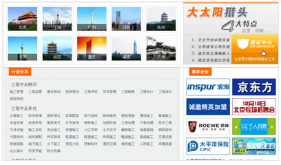

什么叫猎头？
猎头（Headhunting或Executive Search）,或称挖角，是一种于欧美十分流行的人才招聘方式，意思即指「网罗高级人才。 是一种帮助公司企业招聘高级候选人的人才中介机构。
猎首（headhunting），又称猎头，中国古籍作馘首，指将人杀死后砍下并收集头颅的一种习俗。许多古代文明都曾流行过猎首的做法，有史籍记载的包括：古代中国人、台湾原住民、日本人、阿富汗的努里斯坦人、古印度的阿萨姆人和那加兰人、缅甸人、婆罗洲人、印度尼西亚人、菲律宾人、密克罗尼西亚人、美拉尼西亚人、新西兰毛利人、亚马逊平原地区的印第安人、尼日利亚人、欧洲的凯尔特人和斯基泰人，等等。猎首的做法到了第二次世界大战期间还在太平洋战场出现过，但到今天已经在全世界范围内基本绝迹了。
猎头公司首页相关展示
什么叫猎头公司？
“猎头”在英文里叫Headhunting,在国外，这是一种十分流行的人才招聘方式，香港和台湾方面把它翻译为“猎头”，所以引进大陆后我们也称之为猎头，意思即指“网罗高级人才”。
猎头服务的出现，促成社会经济体制中人力资源的流动和合理配置，猎头服务已成为企业求取高级人才和高级人才流动的重要渠道，并逐渐开始形成了一种产业。
中国职业经理人市场的日渐成熟，促成了国内各大城市开始出现数以百计的猎头公司，专业的猎头顾问一般都具有良好的认识经理经验，能够为企业提供人力资源开发知道性建议，他们品行优良，副责任，能够提供候选人才的真实情况并能进行坦诚交流，阅历丰富，至少从事过外企较高的职位，这样才能提供有参考价值的意见，专业的猎头顾问还应保守，严守行业规范和职业操守。全面理解客户需要是成功找到合适人才的前提，因此猎头顾问必须具备高超的沟通能力和技巧，这样才能准确的了解客户真正的需要。专业的猎头顾问还要具备较深的心理学，人际关系学知识等。正由于这种超值和专业的服务，无论是从人员质量及招聘成本上均被许多企业所认可，已正成为一种趋势。
猎头公司相关解析
什么叫猎头职位？
高级人才委托招聘业务，又被称之为猎头服务。专门从事中高级人才中介公司，又往往被称之为猎头公司。猎头一词属舶来词，愿意为割取敌人的头作为战利品的人，这里意为物色人才的人。“头”者智慧、才能集中之所在，”猎头“特指猎夺人才，即发现、追综、评价、甄选和高级人才。猎头公司就是依靠猎取社会所需各类高级人才而生存、获得的中介组织。
与人才交流中心不同，猎头公司采取隐蔽猎取、快速出击的主动竞争方式，为所需高级人才的客户猎取公司人才市场得不到的高级人才。猎头公司的猎物对象是高级管理人才。一般来说，主要是举荐总裁、副总裁、总经理、副总经理、人事总监、人事经理、财务经理、市场总监、市场经理、营销经理、产品经理、技术总监、技术经理、厂长、生产部经理、高级项目经理、高级工程师、博士后、博士、工商管理高级人才、其他高级顾问及其他经理级以上人才等。而人才交流中心的服务是”蓝领“人才、基础事物人才、微观区域人才；前者是客户要什么挑什么，后者是坐而待命，来什么选什么。